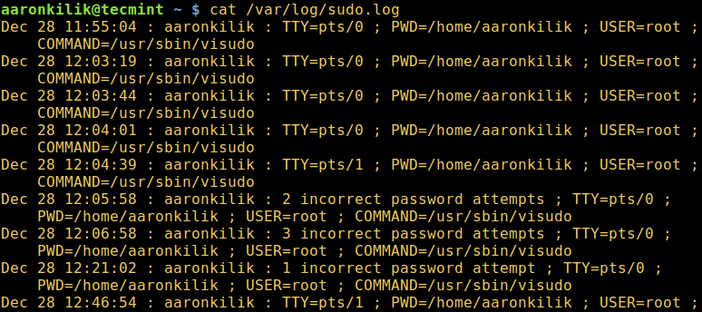
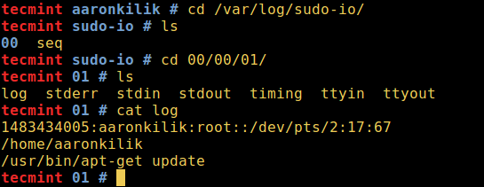
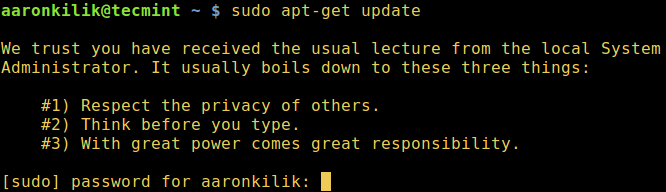
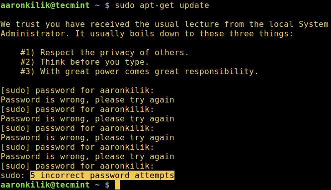
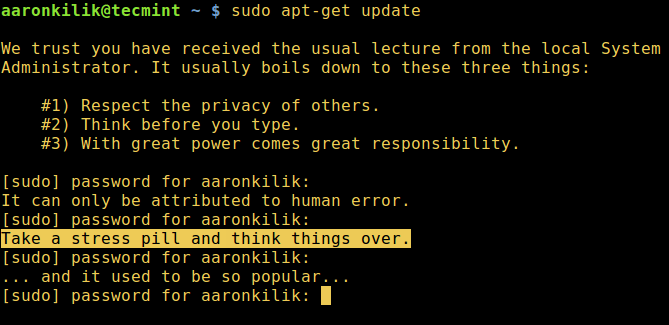

在 Linux 中设置 sudo 的十条 sudoers 实用配置
| 2017-01-25 08:41 评论: 2 收藏: 4
在 Linux 和其他的类 Unix 操作系统中，只有 root 用户可以运行所有的命令，才能在系统中执行那些需要鉴权的操作，比如安装、升级和移除软件包、创建用户和用户组、修改系统重要的配置文件等等。
然而，系统管理员，比如说 root 用户，可以通过 sudo 命令 和一些配置选项来给普通用户进行授权，从而让该普通用户可以运行某些命令已经上述的那些相当重要的系统级操作。
另外，系统管理员还可以分享 root 用户密码 (这个做法是不值得提倡的)，这样普通用户就可以通过 su 命令来转化为 root 用户角色。.
sudo 允许已授权用户按照指定的安全策略、以 root 用户 (或者是其他的用户角色) 权限来执行某个命令。
sudo会读取和解析/etc/sudoers文件，查找调用命令的用户及其权限。- 然后提示调用该命令的用户输入密码 (通常是用户密码，但也可能是目标用户的密码，或者也可以通过
NOPASSWD标志来跳过密码验证)。 - 这之后，
sudo会创建一个子进程，调用 setuid() 来切换到目标用户。 - 接着，它会在上述子进程中执行参数给定的 shell 或命令。
以下列出十个 /etc/sudoers 文件配置，使用 Defaults 项修改 sudo 命令的行为。
$ sudo cat /etc/sudoers
/etc/sudoers 文件：
#
# This file MUST be edited with the 'visudo' command as root.
#
# Please consider adding local content in /etc/sudoers.d/ instead of
# directly modifying this file.
#
# See the man page for details on how to write a sudoers file.
#
Defaults env_reset
Defaults mail_badpass
Defaults secure_path="/usr/local/sbin:/usr/local/bin:/usr/sbin:/usr/bin:/sbin:/bin"
Defaults logfile="/var/log/sudo.log"
Defaults lecture="always"
Defaults badpass_message="Password is wrong, please try again"
Defaults passwd_tries=5
Defaults insults
Defaults log_input,log_output
Defaults 项的类型
Defaults parameter, parameter_list ### 对任意主机登录的所有用户起作用
Defaults@Host_List parameter, parameter_list ### 对指定主机登录的所有用户起作用
Defaults:User_List parameter, parameter_list ### 对指定用户起作用
Defaults!Cmnd_List parameter, parameter_list ### 对指定命令起作用
Defaults>Runas_List parameter, parameter_list ### 对以指定目标用户运行命令起作用
在本文讨论范围内，我们下面的将以第一个 Defaults 作为基准来参考。parameter 参数可以是标记 (flags)、整数值或者是列表 (list)。
值得注意的是，标记 (flag) 是指布尔类型值，可以使用 ! 操作符来进行取反，列表 (list) 有两个赋值运算符：+= (添加到列表) 和 -= (从列表中移除)。
Defaults parameter
或
Defaults parameter=值
或
Defaults parameter -=值
Defaults parameter +=值
或
Defaults !parameter
1、 安置一个安全的 PATH 环境变量
该 PATH 环境变量应用于每个通过 sudo 执行的命令，需要注意两点：
- 当系统管理员不信任
sudo用户，便可以设置一个安全的PATH环境变量。 - 该设置将 root 的 PATH 和用户的 PATH 分开，只有在
exempt_group组的用户不受该设置的影响。
可以添加以下内容来设置：
Defaults secure_path="/usr/local/sbin:/usr/local/bin:/usr/sbin:/usr/bin:/sbin:/bin:/snap/bin"
2、 允许 tty 用户会话使用 sudo
该设置允许在一个真实的 tty 中进行调用 sudo，但不允许通过 cron 或者 cgi-bin 脚本等方法来调用。添加以下内容来设置：
Defaults requiretty
3、 使用 pty 运行 sudo 命令
少数情况下，攻击者可以通过 sudo 来运行一个恶意程序 (比如病毒或者恶意代码)，这种恶意程序可能会分叉出一个后台运行的进程，即使主程序完成执行，它仍能够运行在用户的终端设备上。
为了防止出现这样的情况，你可以通过 use_pty 参数来设置 sudo 使用伪终端来运行其他命令，而不必管 I/O 日志的开启状态。如下：
Defaults use_pty
4、 创建 sudo 日志文件
默认下，sudo 通过 syslog(3) 来记录到日志。但是我们可以通过 logfile 参数来指定一个自定义的日志文件。如下：
Defaults logfile="/var/log/sudo.log"
使用 log_host 和 log_year 参数可以对应记录日志主机名和 4 位数年份到自定义日志文件。如下：
Defaults log_host, log_year, logfile="/var/log/sudo.log"
下面是自定义 sudo 日志文件的例示：

创建 sudo 日志文件
5、 记录 sudo 命令的输入/输出
log_input 和 log_output 参数可以让 sudo 命令运行在伪终端，并可以对应地记录所有的用户输入和输出到屏幕上。
默认的 I/O 日志目录为 /var/log/sudo-io，如果存在会话序列号，它将被存储到该目录。你可以通过 iolog_dir 参数来指定一个目录。
Defaults log_input, log_output
这其中支持转义字符，像 %{seq} —— 以 36 为基数的单调递增序列，比如 000001，这里每两个数字都分别用来形成一个新目录。请看下边例示 00/00/01：
$ cd /var/log/sudo-io/
$ ls
$ cd 00/00/01
$ ls
$ cat log

记录 sudo 命令的输入/输出
cat 命令 来查看该目录的其余部分。
6、 为 sudo 用户提示命令用法
如下，使用 lecture 参数可以在系统中为 sudo 用户提示命令的用法：
参数属性值有三个选择：
always– 一直提示once– 用户首次运行 sudo 时提示 (未指定参数属性值时的默认值)never– 从不提示
Defaults lecture="always"
此外，你还可以使用 lecture_file 参数类自定义提示内容，在指定的文件中输入适当的提示内容即可：
Defaults lecture_file="/path/to/file"

为 sudo 用户提示命令用法
7、 输入错误的 sudo 密码是显示自定义信息
当某个用户输错密码时，会有一个对应的信息显示在屏幕上。默认是“抱歉，请重新尝试。(sorry, try again)”，你可以通过 badpass_message 参数来修改该信息：
Defaults badpass_message="Password is wrong, please try again"
8、 增加 sudo 密码尝试限制次数
passwd_tries 参数用于指定用户尝试输入密码的次数。
默认为 3。
Defaults passwd_tries=5

增加 sudo 密码尝试限制次数
使用 passwd_timeout 参数设置密码超时 (默认为 5 分钟)，如下：
Defaults passwd_timeout=2
9、 在输错密码时让 sudo 羞辱用户
使用了 insults 参数之后，一旦你输出了密码，sudo 便会在命令窗口中显示羞辱你的信息。这个参数会自动关闭 badpass_message 参数。
Defaults insults

在输错密码时让 sudo 羞辱用户
10、 更多关于 sudo 的配置
此外，欲了解更多 sudo 命令的配置，请自行阅读：su 与 sudo 的差异以及如何配置 sudo。
文毕。你也可以在评论区分享其他有用的 sudo 配置或者 Linux 技巧。
作者简介：Aaron Kili 是一名 Linux 和 F.O.S.S 忠实拥护者、高级 Linux 系统管理员、Web 开发者，目前在 TecMint 是一名活跃的博主，热衷于计算机并有着强烈的只是分享意愿。
译者简介：GHLandy —— 欲得之，则为之奋斗。
via: http://www.tecmint.com/sudoers-configurations-for-setting-sudo-in-linux/
作者：Aaron Kili 译者：GHLandy 校对：wxy